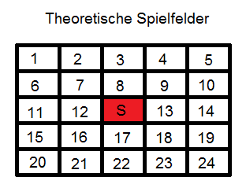
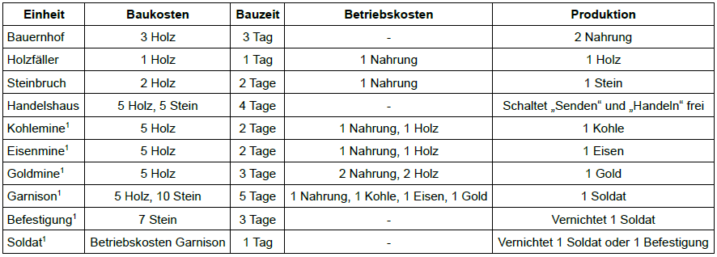
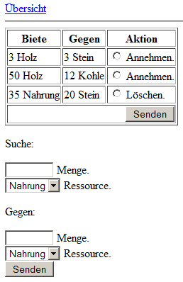

Tutorial "Tabellen-Browsergames mit PHP" (C) 2011-2012 Stephan Kreutzer Tutorial "Tabellen-Browsergames mit PHP" is free software: you can redistribute it and/or modify it under the terms of the GNU Affero General Public License version 3 only, as published by the Free Software Foundation. Tutorial "Tabellen-Browsergames mit PHP" is distributed in the hope that it will be useful, but WITHOUT ANY WARRANTY; without even the implied warranty of MERCHANTABILITY or FITNESS FOR A PARTICULAR PURPOSE. See the GNU Affero General Public License 3 for more details. You should have received a copy of the GNU Affero General Public License 3 along with Tutorial "Tabellen-Browsergames mit PHP". If not, see <http://www.gnu.org/licenses/>. The complete source code is available at <http://www.skreutzer.de/browsergames/technologien/tabellen_browsergames_mit_php.html>.
Download des vollständigen Quellcodes (Version 20121110T1137). Kurzes Beschreibungsvideo auf youtube.com.
Die traditionellste Browsergame-Technologie ist sicherlich eine tabellenorientierte Umsetzung. Die Gründe dafür sind vielfältig: Tabellen sind integraler Bestandteil von HTML, während das Speichern, Lesen und Manipulieren von Werten mittels Datenbank ebenso einer tabellarischen Datenhaltung entspricht. Insofern können Spieldaten beinahe 1:1, jedoch über die Schnittstelle der Spielmechanik mit der Ansichts-Oberfläche ausgetauscht werden – ein naheliegendes Verfahren. Tabellen-Browsergames sind nicht unbedingt auf eine grafische Informations-Repräsentation angewiesen und können dennoch ob ihrer spielerischen Tiefe für viele Stunden fesseln. Im Umkehrschluss bedeutet das aber auch, dass jene Spielkomplexität erst programmiert werden muss. Daher sind die Anforderungen im Vergleich zu einfacheren Browsergame-Technologien deutlich höher.
Aus technischer Sicht handelt es sich um eine herkömmliche PHP-Anwendung. PHP generiert die einzelnen „Menü“-Seiten des Spiels, über welche der Benutzer Einstellungen vornehmen kann. Letztere werden von PHP in eine MySQL-Datenbank transferiert, woraus sich dann wiederum die nunmehr aktualisierten Ansichten speisen. Weil das Spiel ausschließlich auf Ereignisse reagiert, die vom Benutzer ausgelöst werden, sind zentrale Spiel-Abläufe in einer Funktions-Bibliothek zusammengefasst.
Von größter Wichtigkeit ist vor dem Beginn der Programmierung die Konzeption des Spielumfangs und der Spielgestaltung, denn grundlegende Änderungen sind zu einem späteren Zeitpunkt bei solchen größeren Projekten nicht oder nur noch mit erheblichem Aufwand möglich. Jede Überlegung in der Anfangsphase erspart im späteren Verlauf potentiell gravierende Schwierigkeiten. Beim Spielkonzept geht es aber andererseits nicht darum, sich in den kleinsten Details zu verlieren, sondern stattdessen soll die grobe Struktur und die Richtung vorgegeben werden. Zwar können die Einzelheiten gar nicht weit genug ausgestaltet werden, jedoch sollte dies bis zu einem gewissen Grad abstrakt geschehen. Schnittstellen und Code-Module können definiert werden, dabei muss jedoch die planerische Freiheit abseits vom konkreten Code gewahrt bleiben. Ereignisse und Abläufe, Balancing, Ansichten, Ober- und Untergrenzen, Verwaltungsaufgaben und Optionen wollen sorgsam durchdacht werden. Unvereinbarkeiten sollen so frühzeitig erkannt und bereinigt werden können.
Da die Planung beim ersten Anlauf höchstwahrscheinlich sehr schwer fallen wird, weil man zwangsläufig noch nicht wissen kann, was man überhaupt braucht und wo Gefahren lauern, empfiehlt es sich, mit einem minimalen Spielumfang zu beginnen und erstmal Erfahrung zu sammeln. Beim nächsten Mal wird dann viel klarer sein, worauf es ankommt.
Die Oberfläche des Spiels besteht allein aus HTML-Standard-Bedienelementen, womit das Strategie-Genre naheliegt. Zeitlich soll das Spiel im Mittelalter angesiedelt sein. Wie üblich werden Ressourcen abgebaut und Gebäude errichtet. Jeder Spieler erhält die gleiche Anzahl von Feldern, welche (bedingt zufällig) mit Ressourcen belegt werden. Gebäude werden unterschieden zwischen Land- und Stadtgebäuden. Landgebäude dienen der Ressourcenschöpfung und belegen ein Feld, während sämtliche Stadtgebäude auf einem einzigen imaginären Feld ohne Ressource zusammengefasst sind. Das folgende Bild soll diese Vorstellung verdeutlichen, wobei die Position der Felder absolut bedeutungslos ist, da keine grafische Karte realisiert wird:
Ein theoretisches Feld S stellt die Stadt dar. Bei einem Grid von 5x5 Feldern ergibt das 24 Ressourcen-Felder. Als Einheiten-Aufstellung ist vorgesehen:
Bauernhof, Holzfäller, Steinbruch, Kohlemine1, Eisenmine1 und Goldmine1 sind Landgebäude und brauchen zur Errichtung ein passendes Ressourcenfeld. Die anderen Einheiten belegen keinen Platz.
Nun zum Ablauf: Der Spieler beginnt nach erfolgreicher Erst-Anmeldung mit seiner bedingt zufälligen Ressourcenfeld-Verteilung und einem Startkapital von 10 Nahrung + 6 Holz. Das Handelshaus ist für das wirtschaftliche Überleben sehr wichtig, kann aber mangels Stein am Anfang nicht gebaut werden. Stattdessen erhält jeder Spieler mindestens 1 Landfeld, 1 Waldfeld und 1 Gebirgsfeld, um die Grundbaustoff-Ressourcen Holz und Stein für das Handelshaus garantiert abbauen zu können. Der Spieler kann freilich seine Start-Rohstoffe für beispielsweise 2 Bauernhöfe „verschwenden“, sodass er zwar einen Nahrungs-Überschuss erzeugt, ihm aber ohne Handelshaus und ohne Holz von da an weitere Gebäude verwehrt bleiben. Der einzigste Ausweg besteht dann in der Hilfe durch einen anderen Spieler oder durch feindliche Eroberung1. Die Tage, die die beauftragten Gebäude und der Abbau von Rohstoffen benötigen, werden immer als ganze Tage angesehen, es besteht also kein Unterschied zwischen 0:00:00 Uhr und 23:59:59 Uhr desselben Tages (um tageszeitliche Vor- und Nachteile für die Spieler zu vermeiden). 1 Tag ist die kleinste zeitliche Einheit; alle längeren Zeiten müssen aus einem vielfachen dieser Einheit bestehen. Tage werden immer „inklusiv“ betrachtet, d.h. was 3 Tage dauert, ist erst am 4. Tag fertiggestellt. Sämtliche abgebaute Ressourcen werden pro Tag gutgeschrieben für die Anzahl derjenigen Gebäude, deren Betriebskosten geordnet nach folgender feststehender Überlebens-Priorisierung nacheinander gedeckt werden können: Nahrung, Holz, Stein, Kohle1/Eisen1/Gold1 (letztere drei zu gleichen Teilen).
Darüber hinaus gehören vom Spieler ausgelöste Aktionen und Ereignisse zum Kern des Spielablaufs: Das „Bauen“ von Gebäuden (und Einheiten1), das „Senden“ von Rohstoffen an einen anderen bekannten Spieler, das „Handeln“ über einen globalen und anonymen Markt sowie das „Angreifen“1 von Kontrahenten. Die Aktionen „Senden“ und „Handeln“ setzen ein Handelshaus voraus. Die Aktion „Angreifen“1 setzt eine Garnison1 voraus. Beim Senden werden die eingestellten Rohstoffe den eigenen Ressourcen abgezogen und dem angegebenen Spieler direkt gutgeschrieben. Auf diese Weise können sich befreundete Spieler gegenseitig unterstützen, solange sie die entsprechenden Account-Namen kennen. Da Angriffe1 aber ebenfalls den Account-Namen des Gegners erfordern, können beim Senden Spieler-Namen in Erfahrung gebracht werden. Eine sicherere Alternative ist das Handeln, welches aber gänzlich von Angebot und Nachfrage bestimmt wird. Rohstoffe, die der Spieler im Austausch gegen ein gewünschtes Gut anbietet, werden mit Gebotabgabe dem eigenen Guthaben abgezogen und in das Handelshaus transferiert. Es besteht dann aber auch die Möglichkeit, den Handelsvorschlag zurückzuziehen, um die angebotenen Rohstoffe zurückzuerhalten. Wenn ein anderer Spieler bereit ist, die gesuchte Menge herzugeben, wird getauscht. „Angreifen“1 kann ein Spieler nur, wenn er den Account-Namen eines Gegners kennt. Dabei treten seine Soldaten1 (entweder alle oder nur ein Teil) gegen die Soldaten1 und Befestigungen1 des Gegners an. Der Sieg1 über einen Gegner führt lediglich dazu, dass dieser das Spiel neu beginnen1 oder ganz aufgeben1 kann. Dem Verteidiger wird der Name des Angreifers mitgeteilt1. Es besteht keine Möglichkeit, über die Anzahl an Soldaten1 und Befestigungen1 eines Spielers Informationen zu sammeln. Dadurch sollen Angriffe1 besonders für den Angreifer ein hohes Risiko darstellen. Eine Belohnung1 (etwa ein „Eroberungspunkt“1 pro besiegtem Spieler für den Highscore1 oder Ressourcen-Beute1) sowie ein Angriffs-Schutz bei Neubeginn1 sind im Konzept vorerst nicht erfasst.
Nach der Konzeption des Browsergames aus Sicht der späteren Spieler sollen ein paar Gedanken zur programmiertechnischen Seite folgen, vor allem auch deshalb, weil die Komplexität des Beispiels bereits jetzt schon recht hoch ist. Das eigentliche GUI besteht aus den Dateien $/ftp/index.php (Login), $/ftp/uebersicht.php (Übersichtsbildschirm mit Navigation), $/ftp/bauen.php, $/ftp/senden.php, $/ftp/handeln.php und $/ftp/angreifen.php1. Diese GUI-Seiten dürfen der Einfachheit halber direkt lesend auf die Datenbank zugreifen, wenn Daten zur Erzeugung der HTML-Tabellen für die Anzeige benötigt werden. Alle schreibenden Datenbankzugriffe, Berechnungen und komplexere Logiken sind in einer einzigen, zentralen Bibliothek $/ftp/game.inc.php zusammengefasst. Die Verbindungsdaten für die Datenbank werden sowohl für die GUI-Seiten als auch für die $/ftp/game.inc.php in einer separaten $/ftp/database.inc.php wegabstrahiert.
Benutzer sollen in der Datenbank automatisch angelegt werden, sofern noch kein Spieler mit dem gewünschten Namen existiert. Da die Spielernamen im Spiel sichtbar sind (beim „Senden“ und „Angreifen“1), muss ein Account zusätzlich durch ein Passwort geschützt werden. Mit jedem Login wird die automatische Aktualisierung der jeweils dazugehörigen Spielerdaten durchgeführt. Die Aktualisierung wird nur dann Veränderungen vornehmen, wenn Werte heute noch nicht neu berechnet wurden. Damit bleibt ein wiederholter Login am gleichen Tag ohne Effekt. Der Code soll also gänzlich auf Cronjobs verzichten und stattdessen Timer in der Datenbank vorsehen. Weil der Spieler über Ereignisse informiert werden muss, die ihn betreffen, aber von jemand anderem ausgelöst wurden, wird ein internes Nachrichtensystem benötigt, das vom Code erzeugte Nachrichten zur Anzeige bringt und verwaltet.
Die Beteiligung von PHP und einer Datenbank bringt es mit sich, dass das Browsergame auf einem Server betrieben werden muss. Die Programmierung und Entwicklung sollte dabei immer auf einer lokal installierten Server-Software auf dem eigenen Rechner durchgeführt werden. Ein fertiges, getestetes Ergebnis wird dann später auf einen Webserver hochgeladen, um über das Internet potentiellen Spielern zugänglich gemacht zu werden. Kenntnisse hinsichtlich Installation und Betrieb von Server-Software lokal und online sind nicht Gegenstand dieses Tutorials und werden vorausgesetzt. Es sollte berücksichtigt werden, dass zwar das lokale Experimentieren mit Browsergame-Code für jedermann vergleichsweise gefahrlos möglich ist, gleichzeitig aber im Web-Umfeld durch fehlerhaften Code oder falsche Konfiguration erhebliche Sicherheitslücken entstehen können, die im schlimmsten Fall sogar den gesamten Server lahm legen oder etwa zu strafrechtlichen Konsequenzen führen könnten. Deshalb besteht eine weitere wichtige Voraussetzung darin, sämtliche Versuche zu unterlassen, bei welchen man nicht genau weiß, was man eigentlich tut – entsprechendes Wissen ist vorher anzueignen, bevor dieses Tutorial Anwendung finden kann. Darüber hinaus ist der Code des Tutorials keineswegs vor Sicherheitslücken gefeit, sodass er vor dem Einsatz in einer Produktiv-Umgebung überprüft werden muss. Festgestellte Fehler sollen bitte gemeldet werden.
Der Tutorial-Code geht davon aus, dass der Inhalt der Datei $/src/database.sql (oder ein Äquivalent) auf dem Datenbank-System des Servers ausgeführt worden ist. Datenbank-Name, Datenbank-Benutzer, Host und Passwort müssen dabei angepasst und in $/ftp/database.inc.php vermerkt werden.
Wenn in $/ftp/index.php festgestellt wird, dass der Benutzer noch nicht existiert, wird er von insertNewUser() aus $/ftp/game.inc.php in der Tabelle user neu angelegt. Ferner übernimmt die Funktion die Initialisierung der Spielerdaten in den Tabellen user_map (enthält die Anzahl der noch nicht bebauten Felder) und user_resource (Rohstoff-Verwaltung des Benutzers). Im Vergleich zu Image-Maps mit einfacher PHP-Unterstützung fällt auf, dass insbesondere die schreibenden Datenbank-Anweisungen sich des MySQL-Transaction-Mechanismus bestehend aus dem Dreisatz BEGIN, COMMIT und ROLLBACK bedienen. Wo die einzelnen schreibenden Datenbankoperationen eines kleineren Projekts individuell auf Erfolg überprüft werden, können die komplexeren Anweisungen des Tabellen-Browsergames nur noch insgesamt erfolgreich verlaufen. Wenn nämlich eine Anweisung fehlschlägt, dürfen die vorhergehenden Operationen nicht angewendet und müssen zurückgenommen werden. Anderenfalls wäre sonst vielleicht der Benutzer angelegt, der Eintrag in user_map aber nicht vorhanden, während in user_resource wiederum alles in Ordnung wäre. Alle späteren Aktionen im Spiel wären negativ von einer „halben“ Initialisierung beeinflusst, weshalb ein solcher Zustand von vornherein verhindert wird, um evtl. mit einer Fehlermeldung auszusteigen.
Nachdem der Benutzer neu registriert wurde oder seine Account-Daten erfolgreich aus der Datenbank geholt werden konnten (= Anmeldung), wird mit updateUser() der $/ftp/game.inc.php eine Aktualisierung der Spielerdaten vorgenommen. Verläuft diese erfolgreich, wird wie üblich die Session gesetzt und auf allen weiteren GUI-Seiten dementsprechend abgeprüft. Damit bleibt der Zugriff auf das Spiel unterbunden, wenn die Spielerdaten-Aktualisierung nicht durchgeführt werden konnte.
Die Funktion insertNewUser() der $/ftp/game.inc.php verteilt die 24 Ressourcen-Felder insofern „zufällig“, als dass die Anweisungen für Gras, Holz und Stein mit
$verbleibende_felder = 24;
$felder_gras = rand(1, $verbleibende_felder - 2);
$verbleibende_felder -= $felder_gras;
$felder_holz = rand(1, $verbleibende_felder - 1);
$verbleibende_felder -= $felder_holz;
$felder_stein = rand(1, $verbleibende_felder);
$verbleibende_felder -= $felder_stein;
für die PHP-Funktion rand() ein Minimum von 1 vorgibt und aufgrund der - 2 bzw. - 1 für die Obergrenze noch genug $verbleibende_felder übrig lässt, damit alle drei Variablen $felder_gras, $felder_holz und $felder_stein mindestens den Wert 1 oder höher aufweisen können. Die danach übrige Anzahl der noch nicht verteilten Felder wird anschließend zufällig über die ausstehenden Ressourcenfelder-Variablen verteilt, wobei hier auch der Wert 0 zulässig ist.
Nach Anmeldung und Spielerdaten-Update erhält der Spieler Zugang zu der ersten eigentlichen Spiel-Ansicht $/ftp/uebersicht.php. Im Tutorial sind alle Ansichten so aufgebaut, dass zuerst Datenbankabfragen und Berechnungen durchgeführt werden, um danach die Benutzeroberfläche aufzubauen, die aus den ermittelten Daten gespeist wird. Zunächst werden die Tabellen user_resource und user_map sowie building abgefragt. Die Besonderheit bei building besteht darin, dass im Gegensatz zu den ersten beiden Tabellen pro Benutzer mehrere Einträge vorhanden sein können, sodass für das Ergebnis in $gebaeude mittels
if ($gebaeude != false)
{
$result = array();
while ($temp = mysql_fetch_assoc($gebaeude))
{
$result[] = $temp;
}
mysql_free_result($gebaeude);
$gebaeude = $result;
}
alle Einträge in ein zweidimensionales Array abgeholt werden. Die erste Dimension entspricht dem Eintrag, während die zweite Dimension das assoziative Array der Ergebnis-Datenfelder enthält. Zur Verdeutlichung ein exemplarisches var_dump($gebaeude):
array(3) {
[0]=>
array(1) {
["building"]=>
string(11) "HOLZFAELLER"
}
[1]=>
array(1) {
["building"]=>
string(10) "STEINBRUCH"
}
[2]=>
array(1) {
["building"]=>
string(9) "BAUERNHOF"
}
}
Sodann können die Anzahlen der vorhandenen Gebäude für die Variablen $bauernhoefe, $holzfaeller und $steinbrueche aufsummiert werden. Die darauffolgende Abfrage für die Tabelle message verhält sich ganz ähnlich, eine Bearbeitung des Abfrage-Ergebnisses ist jedoch nicht notwendig, da die Nachrichten direkt ausgegeben werden.
Sind alle Vorbereitungen getroffen, werden die einzelnen Komponenten der „Übersicht“ immer dann in das tabellenbasierende Seitenlayout eingefügt, wenn entsprechende Daten vorliegen. An dieser Stelle werden die HTML-Tabellen aber nur zur Anordnung der Seitenelemente verwendet, was noch nicht den typischen Gebrauch für ein Tabellen-Browsergame darstellt. Auf der rechten Seite werden Menüpunkte in die Tabellenzelle eingefügt, wenn die jeweiligen Gebäude vorhanden sind (hier nur bei ENUM_GEBAEUDE_HANDELSHAUS). Zuletzt folgt noch die direkte Ausgabe der Nachrichten aus $messages mit dem Versuch, sie durch den Aufruf von removeAllMessages() (siehe $/ftp/game.inc.php) aus der Datenbank zu entfernen.
Die erwähnte Konstante ENUM_GEBAEUDE_HANDELSHAUS stammt übrigens aus der Datei $/ftp/defines.inc.php. Die Konstante hat den Sinn, den eigentlichen Datenbank-String "HANDELSHAUS" für die Verwendung im Attribut building.building (siehe $/src/database.sql) vor PHP wegzuabstrahieren, gleiches gilt für alle dort definierten ENUM-Konstanten. Für die ENUM_GEBAEUDE-Konstanten wird eine Hilfsfunktion translateEnumGebaeudeToDisplayText(), für ENUM_RESSOURCE-Konstanten eine translateEnumResourceToDisplayText()-Hilfsfunktion angeboten, um bei Bedarf für die Typen entsprechende GUI-Anzeigetexte erhalten zu können.
Während $/ftp/uebersicht.php primär auf die Darstellung von Datenbankwerten ausgerichtet ist, kann der Spieler erstmalig in $/ftp/bauen.php eine Aktion auslösen. Die Datei beginnt ganz ähnlich, enthält aber in den Datenbank-Abfragen für $gebaeude und $bauschlange zusätzlich die Bedingung WHERE `building`='".ENUM_GEBAEUDE_HANDELSHAUS."' mit dem Ziel, später die Existenz oder die Beauftragung eines Handelshauses herausfinden zu können. Im Fall von isset($_POST['gebaeude']) !== true) werden abhängig von der Anzahl der noch zur Verfügung stehenden Ressourcen-Felder die Gebäude angeboten, die beauftragt werden können. Das Handelshaus kann nur gebaut werden, wenn der Spieler noch keins hat und sich auch noch keines im Bau befindet. Klickt der Spieler dann auf „Senden“ (womit der Fall isset($_POST['gebaeude']) === true eintritt), wird das ausgewählte Gebäude an die Funktion insertNewBuilding() der $/ftp/game.inc.php weitergegeben.
insertNewBuilding() führt zunächst erneut Abfragen für $map und $ressourcen durch, um dann beim switch ($gebaeude) für jede Gebäude-Art zu überprüfen, ob genügend freie Ressourcen-Felder und ausreichend Rohstoffe zum Bau vorhanden sind. Diese Aufgabe muss bei der Beauftragung und kann nicht in $/ftp/bauen.php wahrgenommen werden, denn sonst wäre es möglich, mehrere $/ftp/bauen.php-Fenster mit noch ausreichenden Rohstoffen zu öffnen und dann via „Senden“ unerlaubterweise mehrere Gebäude zu beauftragen, obwohl die Rohstoffe insgesamt gar nicht für alle Aufträge ausreichen würden. Ist die Prüfung erfolgreich verlaufen, wird das Gebäude in die Tabelle build_queue eingetragen, wobei z.B. CURDATE() + 3 für das Attribut build_queue.ready den Fertigstellungstermin (Bauzeit) auf 3 Tage von heute an setzt. Das Ressourcen-Feld wird belegt und vom jeweils betroffenen Attribut der user_map-Tabelle abgezogen, ebenso die zum Bau verwendeten Rohstoffe von der Tabelle user_resource. Bei case ENUM_GEBAEUDE_HANDELSHAUS muss darüber hinaus nochmals via $bestehende_gebaeude nachgeprüft werden, ob ein Handelshaus bereits besteht oder sich im Bau befindet, denn in $/ftp/bauen.php kann durch Manipulation in den HTTP-POST-Daten ein Handelshaus übergeben werden, obwohl der Menüpunkt gar nicht zur Auswahl stand.
Die Gebäude in der Bauschlange, deren Fertigstellung und die Gewinnung von Rohstoffen ist von da an nur noch für die Spielerdaten-Aktualisierung im Rahmen der Anmeldung von Bedeutung. Die einzige Ausnahme stellt das Handelshaus dar, welches u.a. die Option „Senden“ in $/ftp/uebersicht.php bereitstellt. Die dann verlinkte $/ftp/senden.php verhindert, dass die Seite zur Anzeige gelangt, wenn kein fertiggestelltes Handelshaus vorhanden ist. Die Aufgabe des Scripts besteht lediglich darin, die Menge und Rohstoff-Art sowie den Namen des Rohstoff-Empfängers und -Absenders an sendResources() der $/ftp/game.inc.php zu übergeben. Dort wird neben einigen Plausibilitätsprüfungen (Ermittlung der ID des Empfängers aufgrund des Empfänger-Namens zeigt gleichzeitig, ob der Benutzer überhaupt existiert) ein Array $messages angelegt, weches die Nachricht aufnimmt, die dem Empfänger anlässlich des Erhalts der Rohstoffe zugestellt wird. Um die Aktion auszuführen, müssen dem aktuellen Benutzer (d.h. dem Absender) die Rohstoffe abgezogen und dem Empfänger gutgeschrieben werden.
Die Option „Handeln“ in $/ftp/uebersicht.php wird ebenfalls vom Handelshaus freigeschaltet und kann über $/ftp/handeln.php aufgerufen werden. Erst hier kommt der Tabellen-Charakter des Spiels in vollem Umfang zum Tragen, während die vorangegangenen Seiten eher unterstützende Aufgaben wahrnehmen:

Die obere HTML-Tabelle repräsentiert jedes Handelsangebot als separate Zeile. Neben der reinen Anzeige von Informationen ist aber gleichzeitig auch ein HTML-Formular integriert: in der Spalte „Aktion“ wird mit „Annehmen“ und „Löschen“ nicht nur signalisiert, ob es sich um ein Angebot eines fremden Spielers oder um ein eigenes handelt, sondern die Radio-Buttons und die „Senden“-Schaltfläche erlauben es, fremde Angebote anzunehmen oder eigene zurückzuziehen. Das untere Formular mit „Suche“ und „Gegen“ dient der Platzierung eines neuen Angebots, wobei „Suche“ den erhofften Rohstoff angibt. Der typische Tabellen-Charakter besteht also darin, dass über Tabellen-Übersichten und Formulare die Steuerung sowie die Darstellung des gesamten Spiels erfolgt, während die Spiel-Logik im Hintergrund die eingetragenen Zahlen verrechnet und entsprechende Datenbank-Operationen ausführt.
Um einen solchen Effekt zu erreichen, reagiert $/ftp/handeln.php auf drei unterschiedliche Stati: im einfachsten Fall wird die Seite lediglich angebrowsed (erkennbar an den nicht gesetzten Elementen im $_POST-Array), sodass lediglich die HTML-Ausgabe generiert werden muss. Weil in den anderen beiden Fällen nach der Ausführung einer Aktion nicht wieder die komplette Seite aufgebaut wird (analog zu $/ftp/bauen.php und $/ftp/senden.php), sondern eine Meldung samt Link zur Übersichtsseite erscheint, kann die Abfrage der trading-Datenbanktabelle auf ihren if-Block beschränkt werden und muss nicht global am Anfang des Codes durchgeführt werden. <form /> und <table /> mit den <th>-Spaltenüberschriften und der letzten Zeile via colspan="3" für den „Senden“-Button bilden daraufhin den Rahmen, in den über die foreach-Schleife pro Ergebnis-Zeile der Datenbankabfrage in $trades die einzelnen Zellen des Handels eingefügt werden. Somit ist die Handelstabelle komplett datengesteuert, denn die Anzahl der verfügbaren Handelsoptionen kann variieren von gar keinem bis zu einer langen Liste an Angeboten. Daneben ändern sich die verfügbaren Einträge im Laufe des Spiels durch die anderen beiden Fälle des Scripts. Bei der ersten Abprüfung des $_POST-Arrays haben sich die Existenz der Elemente $_POST['aktion'] und der Gruppe $_POST['suche_menge'], $_POST['suche_ressource'], $_POST['gegen_menge'] sowie $_POST['gegen_ressource'] gegenseitig ausgeschlossen. Ist die Vierer-Gruppe gesetzt, wurde offensichtlich über das untere Eingabe-Formular ein neues Angebot eingetragen. Dieses wird mit placeResourceTrade() der $/ftp/game.inc.php in die Datenbank übernommen. Ganz ähnlich verhält sich der Fall bei $_POST['aktion'] mit dem Unterschied, dass hier über das obere Tabellenformular via Radio-Button die ID des betroffenen Angebots übermittelt wurde, die dann an handleResourceTrade() der $/ftp/game.inc.php weitergegeben wird. Hierbei wird jedoch nicht angegeben, ob es sich um ein anzunehmendes oder zu löschendes Angebot handelt, diese Unterscheidung muss später erneut getroffen werden. Auf diese Weise werden die Einträge der HTML-Tabelle bearbeitet, sofern die ausgelösten Datenbank-Operationen in den Funktionen der $/ftp/game.inc.php erfolgreich verlaufen.
Nachdem nun die einzelnen PHP-Seiten des Tabellen-Browsergames erläutert wurden, müssen nun noch die übrig gebliebenen Teile der Spiel-Mechanik aus der $/ftp/game.inc.php angesprochen werden. Dort stehen folgende Funktionen zur Verfügung:
insertNewUser()updateUser()insertNewBuilding()sendResources()placeResourceTrade()handleResourceTrade()addMessages()removeAllMessages()
insertNewUser(), insertNewBuilding und sendResources() sind bereits weiter oben im Text behandelt worden. addMessages() und removeAllMessages() weisen keine Besonderheiten auf, die von der üblichen PHP/MySQL-Verwendung abweichen würden. Nach den beiden Handelsfunktionen soll abschließend der eigentliche Kern, nämlich der Update-Vorgang, im Detail beleuchtet werden.
Nach einer Reihe von obligatorischen Plausibilitätsprüfungen wird in placeResourceTrade() für die Variable $ressourcen ermittelt, ob der aktuelle Spieler momentan überhaupt genug Rohstoffe hat, um sie für sein Angebot (die Gegenleistung im Austausch für sein Gesuch) in das Handelshaus zu transferieren. Mit diesem Trick der künstlichen Zwischenstufe des Handelshauses wird verhindert, dass Angebote aktiv sind, für die bei Annahme durch einen fremden Spieler keine Gegenleistung erbracht werden kann. In der Zeile
if ($ressourcen[$gegenRessourceArt] < $gegenMenge)
kann der Parameter $gegenRessourceArt direkt als Array-Index angewendet werden, da ihm als Argument eines der ENUM_RESSOURCE-Defines übergeben wurde, welche mit dem Datenbankattribut-ENUM der Tabelle trading korrespondieren. Die Rohstoffe der Gegenleistung werden daraufhin dem aktuellen Spieler abgezogen und das Angebot eingetragen. Die Bezeichnungen „give“ und „get“ sind aus der Sicht des anbietenden Spielers gewählt, der die Rohstoffe „gibt“ bzw. „bekommen“ möchte. Für den annehmenden fremden Spieler kehrt sich die Bedeutung um, denn was der aktuelle Spieler „bekommen“ möchte, muss er geben, was sich dann in handleResourceTrade() zeigt.
handleResourceTrade() kann aufgrund übereinstimmender Spieler-IDs erkennen, ob es sich um eine Angebots-Löschung oder -Annahme handelt. Bei der Annahme im Fall von $trade['user_id'] != $userID muss zuerst geprüft werden, ob der Spieler die gewünschten Rohstoffe überhaupt liefern kann. Wenn das der Fall ist, wird ihm die Gegenleistung gutgeschrieben und die geforderten Rohstoffe abgezogen. Beim Ersteller des Angebots muss dann nur noch die Gutschrift der gelieferten Rohstoffe erfolgen, da die Gegenleistung schon vorher beim Transfer in das Handelshaus abgezogen wurde. Zuletzt wird das Angebot aus der Liste genommen. Wenn die Bedingung $trade['user_id'] == $userID zugrifft, soll ein eigenes Angebot zurückgezogen werden. Dafür müssen die im Handelshaus gelagerten Rohstoffe an den Spieler zurückgegeben und der entsprechende Eintrag aus der Tabelle trading gelöscht werden.
Die wichtigste Aufgabe übernimmt jedoch updateUser(), welches sämtliche Werte eines Spielers auf den neuesten Stand bringt. Der Aufruf erfolgt im Tutorial bisher nur bei der Anmeldung, könnte aber ebenso vor einem Kampf1 notwendig sein – etwa weil der verteidigende Spieler in der Bauschlange etliche Festungen1 fertiggestellt haben könnte, welche aber keine Anwendung finden würden, wenn sie nicht vorher durch updateUser() in die Gebäudeliste übergehen. Zu diesem Zweck werden für die Variable $bauschlange alle Datensätze abgefragt, deren Fertigstellungstermin in build_queue.ready in der Vergangenheit liegt. Die Elemente in $bauschlange werden anschließend direkt in die Tabelle building eingefügt. Insbesondere die Belegung des Attributs building.timer hat zur Folge, dass noch für den selben Tag der „Übernahme“ Erträge erzielt werden, denn das Gebäude stand ohnehin erst am Folgetag nach Ablauf der Bauzeit zur Verfügung. Danach können die übernommenen Gebäude aus der Bauschlange entfernt werden. Nachdem nun alle vorhandenen Gebäude in der Tabelle building vorliegen, wird ihr Ertrag ermittelt. Die alten Rohstoff-Bestände in $ressourcen bilden die Grundlage der Berechnung, wobei alle Gebäude des Spielers mit veraltetem building.timer-Attribut via $gebaeude bereitgestellt werden. Die Schleife
foreach ($gebaeude as $ein_gebaeude)
{
$tagedifferenz = strtotime(date("Y-m-d")) - strtotime($ein_gebaeude['timer']);
$tagedifferenz = floor($tagedifferenz / 86400);
if ($tagedifferenz < 0)
{
// Sicher ist sicher...
continue;
}
switch ($ein_gebaeude['building'])
{
case ENUM_GEBAEUDE_BAUERNHOF:
$bauernhoefe += $tagedifferenz;
break;
case ENUM_GEBAEUDE_HOLZFAELLER:
$holzfaeller += $tagedifferenz;
break;
case ENUM_GEBAEUDE_STEINBRUCH:
$steinbrueche += $tagedifferenz;
break;
}
}
wird pro Gebäude die Anzahl der Tage seit der letzten Rohstoff-Aktualisierung berechnet, um dann gemäß $ein_gebaeude['building'] auf die jeweils zutreffende Variable $bauernhoefe, $holzfaeller oder $steinbrueche aufsummiert zu werden. Im Code darunter greift dann die im Konzept festgelegte Überlebens-Priorisierung: da Bauernhöfe keine Betriebskosten haben, kann ihr Ertrag ganz einfach mittels $nahrung += 2 * $bauernhoefe auf die alte Nahrungs-Menge aufgeschlagen werden. Der Faktor 2 ergibt sich aus der Einheiten-Aufstellung des Konzepts. Auf dieser Grundlage basierend werden sodann pro hypotetischem „Holzfäller-Tag“ und „Steinbruch-Tag“ die Betriebskosten von 1 Nahrung abgezogen, dafür aber der Ertrag in $holz oder $stein gutgeschrieben2. Die Verteilung geschieht nicht anhand einer vom Spieler eingestellten Priorisierung, noch zu gleichen Teilen, noch anhand einer manuellen Zuteilung, sondern fest vorbelegt, wodurch die weitere Ressourcen-Schöpfung einfach abbricht, sobald $nahrung den Wert 0 erreicht. Dies bedeutet, dass auch alte Nahrungsvorräte aufgebraucht werden oder beispielsweise alle Nahrungsreserven von den Holzfällern beansprucht werden, während gleichzeitig kein einziger Steinbruch versorgt wird und Rohstoffe abbauen kann. Nach den beiden Schleifen stehen die neuen Rohstoff-Werte des Spielers fest und werden in der Datenbank vermerkt. building.timer wird auf das aktuelle Datum gesetzt, damit bei der nächsten Spielerdaten-Aktualisierung festgestellt werden kann, ob und in welchem zeitlichen Verlauf für das betreffende Gebäude die Rohstoff-Gewinnung nachberechnet werden muss. Es sind ferner keine negativen Werte möglich, denn wenn Betriebskosten nicht gedeckt werden können, stoppt das lediglich alle weiteren Förderungs-Prozesse. Die Gesamt-Bilanz für $messages kann dagegen allerdings negativ ausfallen, da dort die Differenz des neuen Wertes zum alten Wert angegeben wird.
Die hier aufgezeigte Implementierung veranschaulicht einige elementare Bestandteile traditioneller Tabellen-Browsergames. Es kommen sowohl Echtzeit-Effekte („Handeln“, obwohl nicht im Sinne von AJAX o.ä.) als auch runden-basierende Einflüsse (Spielerdaten-Aktualisierung mit Tagen als Runde) zum Tragen, ohne dass besondere Anforderungen an das Webserver-Umfeld gestellt werden. Möglich ist dies durch Ausnutzung von Timern in der Datenbank, was dafür aber mit Performance- und Skalierungs-Einbußen einhergeht. Die Optimierungs-Diskussion (auch hinsichtlich der Datenbank-Struktur) ist jedoch nicht Gegenstand dieses Tutorials, sondern die zugrundeliegende Technik dieser bestimmten Sorte von Spielen. Ausgehend vom vorgestellten Code kann man nun Optimierungen vornehmen, die im Konzept vorgesehenen Erweiterungen einbauen (gekennzeichnet über die Fußnote 1) oder aber noch vielfältige eigene Wirtschaftszweige und Militär-Prozeduren entwerfen. Änderungen an Werten, Berechnungen, Benennungen und Abläufen geben ein Gefühl für die internen Zusammenhänge des Projekts. Auch über die Grenzen des Tutorials hinaus stellen Tabellen-Browsergames eine solide Grundlage für ernsthafte Browsergame-Entwicklung dar, denn ohne große Mühe kann die Anzeige mit CSS aufgewertet, durch Story-Texte belebt, mithilfe von Symbol-Bildern greifbar gemacht und schließlich unter Einsatz einer globalen Welt-Karte ganzheitlich abgerundet werden. Gerade letzteres bietet eine breite Palette an Möglichkeiten, z.B. die Kombination mit bereits vorgestellten Techniken wie reinen Image-Maps oder Image-Maps mit einfacher PHP-Unterstützung.
Die Technologie der Tabellen-Browsergames deckt ein breites Spektrum an Spiele-Genres ab. Besonders im Strategie- und Aufbauspiel-Bereich werden die Tabellen-PHP/MySQL-Vertreter noch für viele Jahre nicht zu verdrängen sein. Da das Hauptaugenmerk auf der Umsetzung der Spiellogik liegt, können Programmierer und Designer ihre Zeit für die konkrete Ausgestaltung ihrer Vorstellungen einsetzen. Trotzdem erreicht die Komplexität schnell ein kritisches Maß, ab welchem eine ordentliche Organisation unverzichtbar wird. Zur Verdeutlichung sei nur mal die Spielerdaten-Aktualisierung genannt, die bei größerem Umfang zwingend aufgeteilt und stark optimiert werden müsste, um die Belastung infolge von Anmeldung/Ereignissen einzuschränken und die Wartbarkeit des Codes zu gewährleisten. Darüber hinaus werden Fehler und Seiteneffekte zu einem großen Risiko, dem begegnet werden will. Mit zunehmender Erfahrung, einigen technischen Tricks sowie außerordentlich viel Geduld rücken dann aber auch bald die bekannteren, erfolgreicheren Seiten in greifbare Nähe. Eine Aussicht, welche zu erreichen für einen Privatmenschen ohne große Mittel nicht gänzlich unmöglich ist.